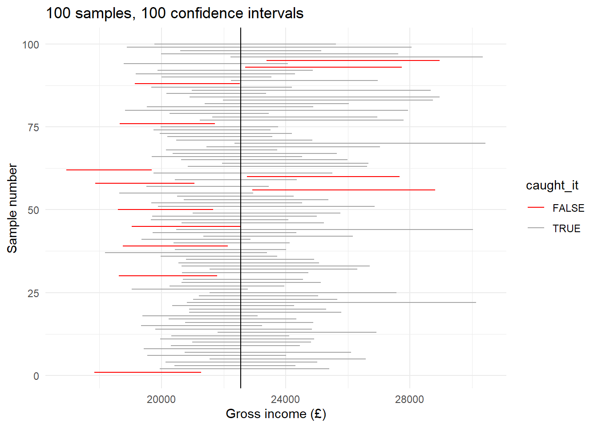

library(dplyr)
library(ggplot2)
frs_data <- read.csv("../data/FRS/FRS16-17_labels.csv")
frs_independent <- frs_data %>% filter(dependent != "Dependent")Samples, Uncertainty and P-values
This page picks up where the Week 1 practical left off. You do not need it to complete any lab, and nothing here is examined on its own. It is here because the ideas below decide whether the numbers in your report actually mean what you say they mean, and because three of them are very commonly got wrong in assignments.
Read it at some point before you write up your results. It should take about twenty minutes.
What you need to have done first: the section From Sample to Population in the Week 1 practical, where we established that a sample mean wobbles, and that the size of the wobble is called the standard error.
Setting Up
Everything below uses the same FRS data as the Week 1 practical, so we load it the same way. Check the path — you may need to remove the ...
A note before we start: none of the code below will give you exactly the numbers printed on this page, because every chunk draws a fresh random sample. That is the entire point of the page. Your figures should be close to these, not identical, and if you run a chunk twice you will get two different answers.
Why Sample Size Matters
In the practical we found that samples of 500 people missed the true mean income by about £1,200 on average, and that this figure — the standard error — can be calculated as the standard deviation divided by the square root of the sample size.
That square root has a practical consequence. Let’s repeat the exercise with smaller and larger samples:
means_100 <- replicate(1000, mean(sample(frs_independent$income_gross, size = 100)))
means_2000 <- replicate(1000, mean(sample(frs_independent$income_gross, size = 2000)))
sd(means_100) # standard error with n = 100[1] 2707.13sd(means_2000) # standard error with n = 2000[1] 589.3792Roughly £2,800 for samples of 100, against £600 for samples of 2000. Bigger samples give more precise answers — but look at the rate. To halve your uncertainty you must quadruple your sample.
This is why national surveys are expensive. It is also why you should be sceptical of confident claims made about small subgroups: a survey of 40,000 people may contain only 90 people in the particular category you want to talk about, and the uncertainty for that group is set by the 90, not the 40,000.
Worth doing: find a subgroup in the FRS that interests you — one region, say, or one age group. How many people are in it? Using the formula above, how precisely can you estimate its mean income? If the answer is “not very”, that is a limitation worth stating in your report.
Confidence Intervals
Reporting “£22,544” on its own pretends to a precision we do not have. A confidence interval reports the estimate together with its uncertainty, and R will build one for us:
one_sample <- sample(frs_independent$income_gross, size = 500)
t.test(one_sample)
One Sample t-test
data: one_sample
t = 19.755, df = 499, p-value < 2.2e-16
alternative hypothesis: true mean is not equal to 0
95 percent confidence interval:
20151.58 24602.53
sample estimates:
mean of x
22377.06 Ignore most of that output and look at the part labelled 95 percent confidence interval.
The interval is, roughly, “our estimate, give or take about two standard errors”. Its meaning is best stated as a statement about the method: if we repeated this whole exercise many times, about 95 out of every 100 intervals built this way would contain the true population mean.
A confidence interval is almost always more informative than a single number, and reporting one in your assignment is a mark of careful work.
Seeing What “95%” Means
That definition is a mouthful, and it is far easier to believe once you have watched it happen. So let’s build not one confidence interval, but a hundred.
The idea is the same as before: take a sample of 500 people, build a confidence interval from it, write it down, and repeat another 99 times. Because we are pretending the FRS is the whole population, we know the true answer, so afterwards we can simply count how many of our intervals caught it.
# Take 100 samples of 500 people, and keep the confidence interval from each one
intervals <- replicate(100, t.test(sample(frs_independent$income_gross, 500))$conf.int)t.test(...)$conf.int runs the test but keeps only the confidence interval, throwing the rest of the output away. The $ picks one piece out of a result, just as Grades$Name picked one column out of a table in the practical.
The result, intervals, has two rows and 100 columns: one column per sample, with its lower limit on the first row and its upper limit on the second. We can pull those two rows out to build an ordinary table:
many_intervals <- data.frame(
sample_number = 1:100,
lower = intervals[1, ], # all of row 1: the lower limits
upper = intervals[2, ] # all of row 2: the upper limits
)
head(many_intervals) sample_number lower upper
1 1 17833.49 21278.20
2 2 19945.11 25408.66
3 3 20416.31 24318.25
4 4 20128.63 25020.68
5 5 21544.48 26575.69
6 6 19540.98 24011.72Now work out the true answer, and check each interval against it:
true_mean <- mean(frs_independent$income_gross)
# TRUE if the interval caught the true mean, FALSE if it missed
many_intervals$caught_it <- many_intervals$lower < true_mean & many_intervals$upper > true_mean
table(many_intervals$caught_it)
FALSE TRUE
13 87 A handful missed — usually somewhere between about three and ten of the hundred. Let’s draw them. Each horizontal line is one sample’s confidence interval, and the vertical line is the true mean income of the population:
ggplot(many_intervals, aes(y = sample_number, colour = caught_it)) +
geom_linerange(aes(xmin = lower, xmax = upper)) +
geom_vline(xintercept = true_mean) +
scale_colour_manual(values = c("red", "grey65")) +
labs(
title = "100 samples, 100 confidence intervals",
x = "Gross income (£)",
y = "Sample number"
) +
theme_minimal()
This picture is the definition of a confidence interval:
- Every interval is a different width and sits in a different place, because every sample was different.
- Most straddle the true mean. A few — the red ones — do not.
- Nothing is wrong with the red intervals. They were built in exactly the same way as the others. They were simply unlucky samples.
And here is the part that matters for your report. In real research you only ever get one of these lines. You never find out whether yours is grey or red, because you never learn the true answer. What “95% confident” buys you is not certainty about your own interval; it is the knowledge that the procedure you used lands on the truth about 19 times out of 20.
Worth doing: change 500 to 2000 in the code above and run the whole thing again.
You should find the intervals roughly halve in width, because we quadrupled the sample. But the number of red ones does not shrink in the same way — it stays somewhere around five, bouncing about from run to run because that count is itself a random quantity.
This is the point. Bigger samples buy you precision: a narrower interval, a sharper answer. They do not buy you reliability: the 95% was fixed by us when we asked for a 95% interval, and it stays at 95% whatever the sample size.
One honest footnote. If you count carefully you will often find rather more than five red intervals. That is not a mistake either. Incomes are so badly skewed — remember the handful of people earning over a million — that confidence intervals built this way come out slightly too narrow, and catch the truth about 93% of the time rather than 95%. This is a small example of a large lesson: statistical tools come with assumptions attached, and skewed data strains them.
Significance and Sample Size
In the practical we found a gender income gap of about £9,300 across 33,836 people, with a p-value too small for R to print. Now watch what happens when we ask the identical question of only 60 people:
small_sample <- frs_independent %>% slice_sample(n = 60)
t.test(income_gross ~ sex, data = small_sample)
Welch Two Sample t-test
data: income_gross by sex
t = -2.3709, df = 33.649, p-value = 0.02362
alternative hypothesis: true difference in means between group Female and group Male is not equal to 0
95 percent confidence interval:
-24433.759 -1874.774
sample estimates:
mean in group Female mean in group Male
15400.67 28554.93 Worth doing: run those two lines four or five times over, and watch the p-value each time.
You will see it jump around wildly. Sometimes the gap comes out statistically significant; most of the time it does not — in fact, with 60 people this test only reaches p < 0.05 about a third of the time. The confidence interval for the difference will usually include zero, which is the same message in a different form.
Nothing about the UK changed between the big test and the small one. There really is a gender income gap. Only our ability to detect it changed.
This is the lesson to take away: “not statistically significant” means “this sample cannot settle the question”. It does not mean “there is no difference”.
In your report, this is a matter of wording, and markers notice. “No significant association was found” is defensible. “There is no association” is not, and it is a much stronger claim than your data can support.
What a P-value Is Not
Three misreadings are extremely common in student reports, and each one costs marks:
- A p-value is not the probability that the null hypothesis is true, and it is not the probability that your finding is correct. It is calculated assuming the null hypothesis is true, so it cannot tell you how likely that assumption is. Three asterisks do not mean “99.9% certain there is a relationship”.
- A small p-value does not mean the effect is large or important. With a big enough sample, a trivially small effect will come out “highly significant”. Significance tells you an effect is detectable; only the coefficient itself tells you whether it matters. Always report and interpret both.
- A p-value says nothing at all about causation. It cannot distinguish a real causal relationship from a confounded one. That judgement comes from your literature review and your research design, never from the output.
A Note on Census Data
Everything on this page assumes your data are a random sample of some larger population. That is true of the FRS, the APS and the SAR.
It is not true of the Census. When you run a regression on the 2021 Census district data in Week 2, you are working with every district in England and Wales, not a sample of them. Strictly speaking there is no sampling uncertainty to quantify, because there was no sampling.
Statisticians handle this by treating the observed pattern as one realisation of a social process that could have turned out differently — the districts we see are one roll of the dice, and the p-value asks how easily that roll could have come up by chance. That is a reasonable way to reason, but it rests on a weaker footing than a genuine random sample, and it is a judgement rather than a fact about the data.
You do not need to resolve this. But if you use Census data in your assignment, a sentence acknowledging it in your limitations section is exactly the kind of critical awareness the higher marking bands reward.